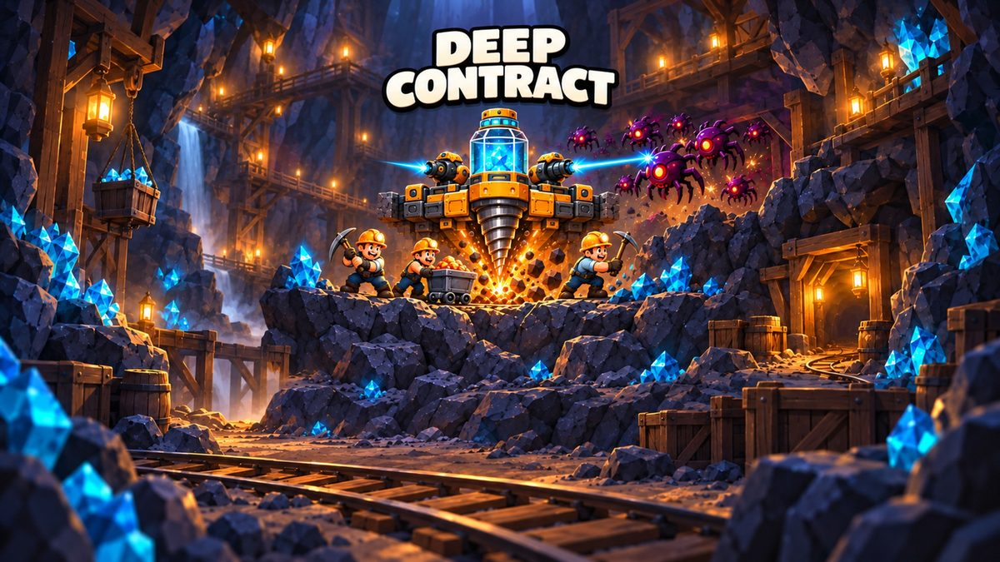
AI-assisted game developer
I study games from public footage, write structured teardowns and design specs, then build playable web games with AI coding agents. I make the design calls, review what the agents produce, and playtest and QA every build. Below: 22 playable games and prototypes and 54 teardowns. Most games run in a phone browser.
Each one starts from a teardown of a reference game. The rules I keep, change or design new are written down in a design spec. No art, audio or text from the reference games is used.

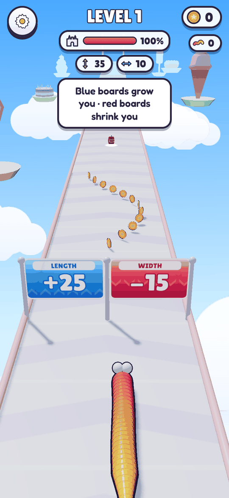
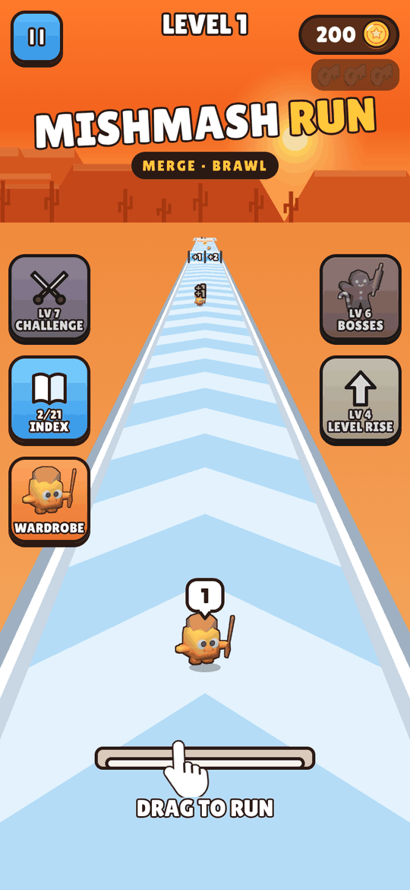
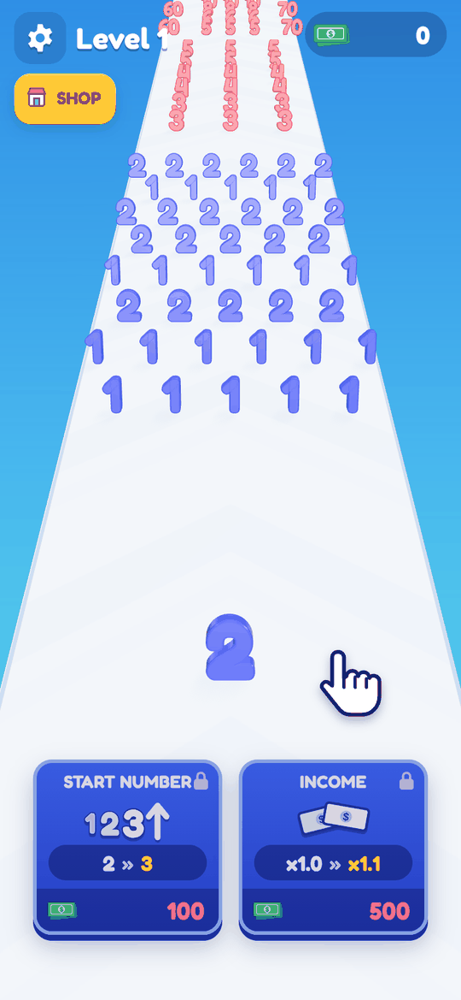
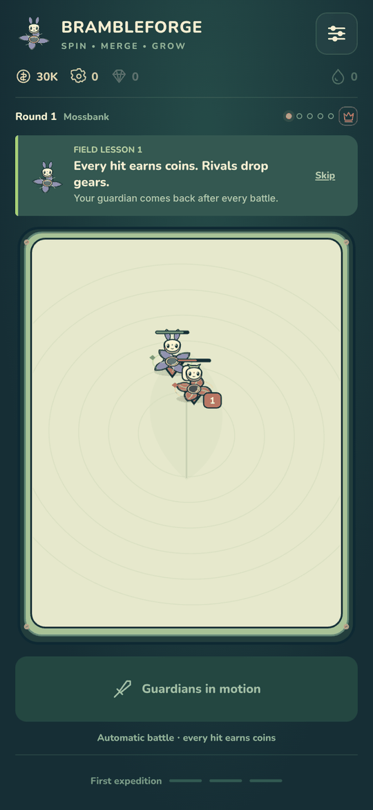
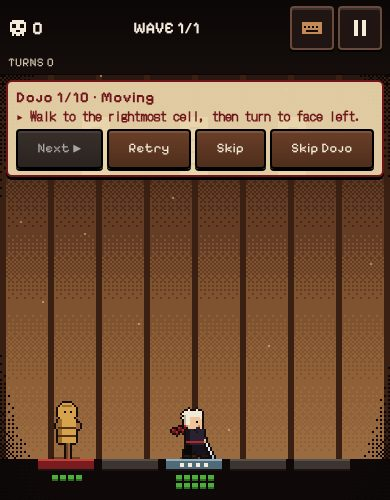
New concepts: research, a set of concepts, one picked and built. Art is generated or drawn in code; no third-party asset packs.
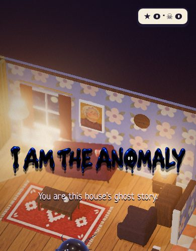
You are the ghost story: a living ink blot haunting a dollhouse. Prank the plush night inspectors, hide in the dark and scare them out of the house.
Original concept
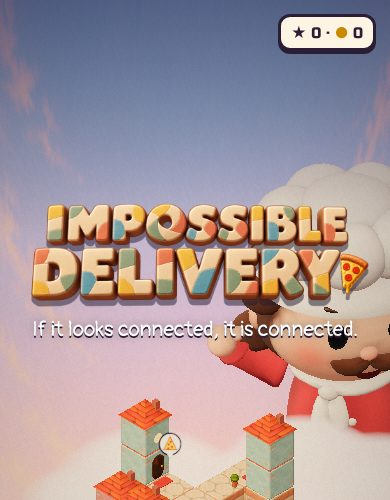
Turn an impossible tower until the walkways line up: if it looks connected, it is connected. Deliver hot pizza to a giant above the clouds.
Original concept
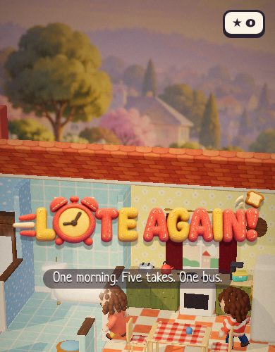
One morning, five takes, one school bus. Play the family morning as each of them in turn while your earlier takes repeat beside you as echoes.
Original concept
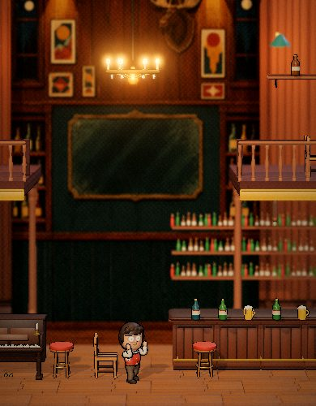
A bar brawl where you never throw a punch: slow time, swap the speeds of flying things and let the thugs knock themselves out.
Original concept
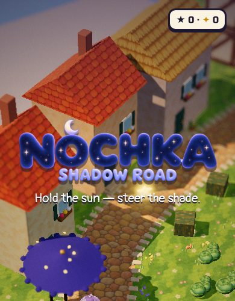
You hold the sun. Drag it across the sky so every shadow swings, and keep a little piece of night alive on her walk home.
Original concept
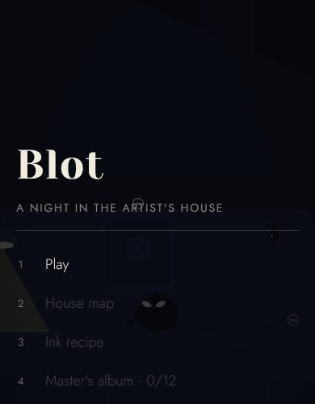
A living ink blot in an empty artist's house: chain different scares on the night inspectors and stay out of the flashlight beams.
Original concept
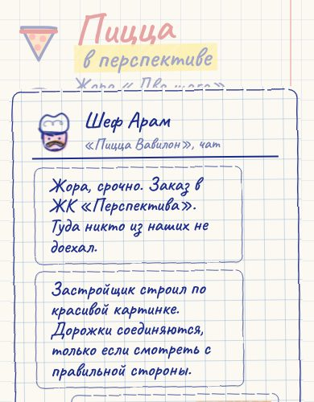
Turn an Escher-style tower until two roofs line up on screen, then walk the pizza across a bridge that exists only from where you look.
Original concept
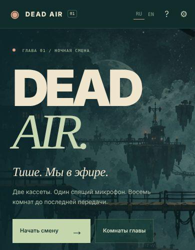
Two cassettes, one microphone, eight rooms to the last broadcast. A two-character platformer for one player with a helper, or two players on one keyboard.
Original concept
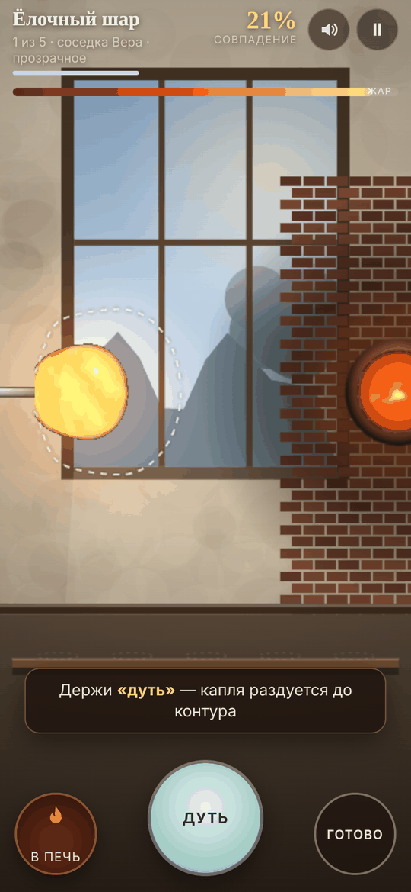
A glassblower's working day: blow, spin and reheat living glass to match five customer orders before it cools or bursts.
Original game: research, 10 concepts, one picked and built
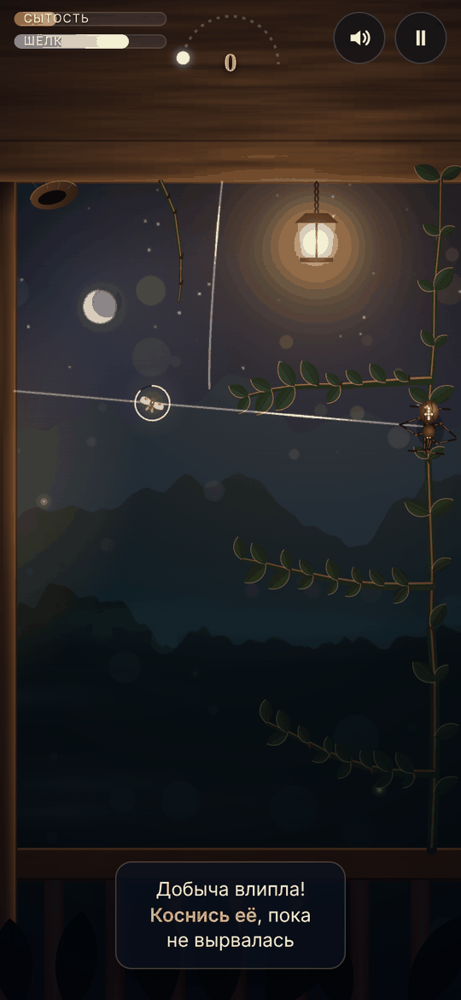
One night as a garden spider: string silk between supports, catch moths drawn to the lantern, eat your fill before dawn.
Original game: research, 10 concepts, one picked and built
Short-session games built for a mobile web games platform. Two of them reuse a core with a new theme and new content.
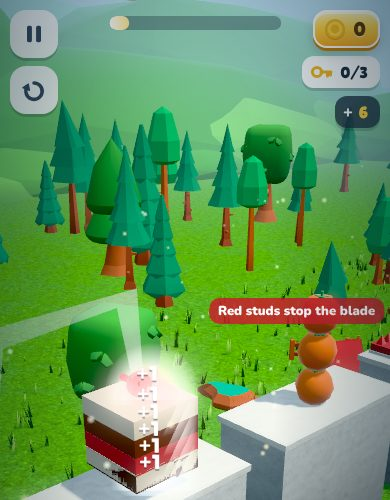
One-thumb knife toy: every tap flips the blade forward. Slice cakes, fruit and toys, stop before the red studs. 36 courses, then endless remixes.
Built for a mobile web games platform
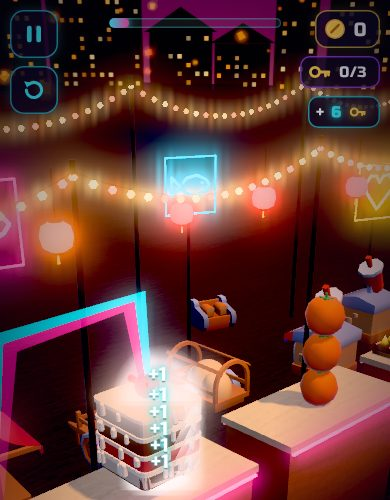
The Flip & Slice core rebuilt as a neon night market: slice street food, hop the hot grills, land on the prize tower. New districts and content.
Built for a mobile web games platform
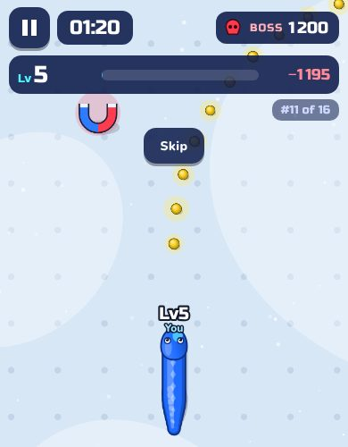
Steer a small serpent through safe food and risky body bites, grow into a dragon, then face the boss when the 80-second hunt ends.
Built for a mobile web games platform
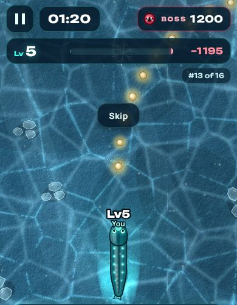
The Serpent Clash core moved to the deep sea: bite weaker eels, dodge stronger jaws, and beat the leviathan of each of twelve depths.
Built for a mobile web games platform
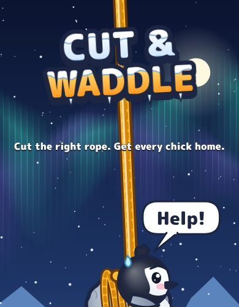
Cut the right rope and get every penguin chick out of the frozen harbour. 60 classic rooms, 30 rescue-everyone rooms and a VS race.
Built for a mobile web games platform
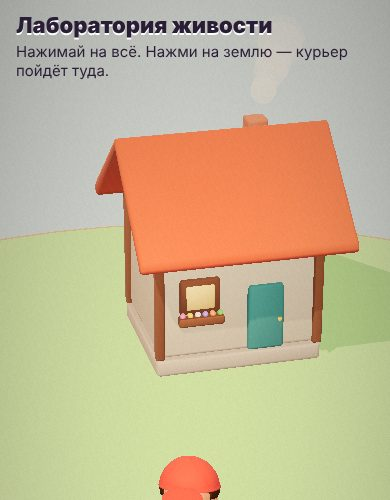
Character-animation sandbox: tap the ground and the felt courier walks there.
Tech experiment
Each prototype goes through the same five steps. AI agents do much of the analysis drafting and the coding. I set the direction, make the design decisions and check the result at every step.
Public recordings of the reference game, store pages and reviews are collected; key frames are extracted as evidence.
My part: choose the reference game and the recordings worth studying, and decide what question the analysis must answer.
An agent drafts a structured HTML teardown: core loop, rules, economy, first-session flow, each claim tagged as observed, inferred or unknown and linked to a frame.
My part: check claims against the footage, flag guesses, and judge what makes the game work and what to fix in a remake.
A DESIGN document maps every rule of the adaptation to the teardown: kept as observed, adapted, or newly designed. Acceptance cases are written up front.
My part: theme and art direction, onboarding, economy and pacing choices, scope, and what not to copy.
Coding agents (Codex, Claude) implement the game in TypeScript / JavaScript with Canvas, WebGL or three.js and ship a single self-contained HTML file. Assets are sourced under CC0, CC BY or OFL licences.
My part: break work into tasks, review builds, reject what doesn't feel right and iterate on feel and readability.
Rule tests, headless balance bots, end-to-end runs on the release file with touch input, long-session runs and layout checks across screen sizes.
My part: play the builds on phone and desktop, write bug reports and checklists, and decide when a build is ready.
Long-form HTML reports with embedded evidence frames: core loop, rules, economy, first session, UI and what to borrow. Large files, best read on desktop.
Mining management and tower defence roguelite. Basis for Deep Contract.
Single-lane, turn-based tactical roguelite. Basis for Shogun Lane.
3D jelly-worm runner with a city-building meta. Basis for Sugar Siege.
Crowd runner feeding a merge auto-battle. Basis for Mishmash Run.
Number runner with a wall-staircase payout. Basis for Digit Dash.
Physics merge drop puzzle.
Spinning-top merge auto-battler. Basis for Brambleforge.
Incremental obby where every step adds +1 speed: loop, multipliers, economy, monetisation and retention.
Co-op wave survival for up to 25 players: loop, weapons, economy, monetisation and live-ops.
Indie web games played and analysed with my teardown pipeline. 0.3–7 MB each.